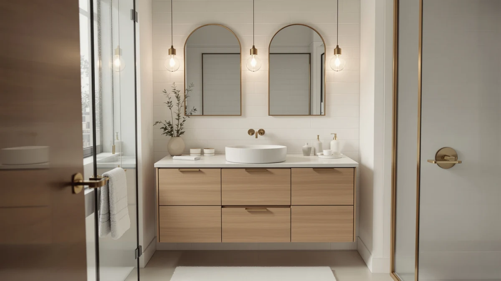

The Best Freestanding Bathroom Vanities of 2026
Prices and picks verified as of August 2026. Independent, reader-supported reviews.


Quick Answer
After comparing eight of the best freestanding bathroom vanities on material, price, and verified owner reviews, the Pvillez 48" Double Sink Bathroom vanity is our top pick for most shared bathrooms thanks to its two-sink layout in a compact 48-inch footprint and its 4.1-out-of-5 rating across 40 verified reviews.
Our pick: Pvillez 48" Double Sink Bathroom — $758.00 Check Price on Amazon
Bottom line: our top pick is the Pvillez 48" Double Sink Bathroom Vanity Freestanding at $758. The best budget option is the IFBUY 30 Inch Arched Bathroom Vanity with Sink at $215.99.
Things to Know Before You Buy
- Freestanding means floor-supported, not floating. All eight vanities in this comparison rest on their own base or legs, unlike a floating vanity, which mounts to the wall and needs blocking behind the drywall.
- MDF dominates this category. All eight vanities use MDF or engineered wood construction, which keeps cost and weight down but means standing water near the base should get wiped up quickly.
- Double sink needs real counter width. The Pvillez and LIKIMIO 59-inch vanities pack two sinks into their cabinets, but a double-sink layout under roughly 55 inches wide tends to crowd faucet handles and elbow room at the counter.
- Farmhouse styling is a look, not extra function. The two LUXOAK 61-inch vanities in this comparison share the same shiplap-style paneling and apron-front basin design more than they differ in size or price.
- Check the sink configuration before you buy. Some listings ship the countertop and sink pre-attached, others expect a separate purchase, so confirm what's included before you budget for installation.
The best freestanding bathroom vanities give you a finished cabinet that stands on its own legs or base, without tying into a wall-mounted bracket or built-in cabinetry run. That matters most in older homes and secondary bathrooms, where a floating vanity's blocking and plumbing rough-in rarely line up with a modern install. We compared eight standalone vanities built for that exact swap, weighing material, sink configuration, and price instead of chasing the flashiest finish. Our top pick, the Pvillez 48" Double Sink Bathroom vanity, earned that spot by pairing two sinks with a mid-size 48-inch footprint at $758.00, but seven other options cover single-sink layouts, farmhouse styling, and lower price points.
We built this list by researching eight freestanding vanities that ship pre-assembled or ready-to-assemble, then comparing their materials, dimensions, and verified owner reviews on Amazon. Every option here stands independently on the floor, which rules out the wall-hung and floating vanities that sometimes get folded into broader roundups. Prices range from $239.99 for the compact IFBUY and LIKIMIO 30-inch models to $758.00 for the Pvillez double-sink unit, so the lineup covers a full bathroom remodel budget and a quick swap in a secondary bath alike.
Below, you'll find what to check before buying a freestanding vanity, how we picked and compared these eight options, and a detailed look at what each one gets right and where it falls short. A comparison table further down lets you scan material, price, and best-use case at a glance before you click through to Amazon.
Why You Should Trust Us
Ilane Tall covers home and bath products for Best Bathroom Vanities, where she researches fixtures, storage, and remodeling gear for a US audience. For this guide, she and the editorial team compared publicly listed specs, pricing, and verified buyer reviews for every freestanding bathroom vanity under consideration, rather than relying on manufacturer marketing copy. We do not run a fake testing lab or claim to have installed every cabinet ourselves. Instead, we cross-reference materials, dimensions, and owner feedback so you can make a confident decision about which of the best freestanding bathroom vanities fits your bathroom before you buy.
How We Picked
To build this list of the best freestanding bathroom vanities, we started by pulling every standalone vanity from our product database, then narrowed the list to models that install without a wall-mounted bracket or built-in cabinetry run. From there, we cut listings without clear material specs, sizing, or a documented price, since incomplete listings make it hard to compare fairly. We prioritized a mix of configurations, from single-sink 30-inch cabinets under $250 to a double-sink 48-inch unit near $760, so this guide works whether you're outfitting a powder room or a shared primary bathroom. Finally, we checked style and sink count (single, double, arched front, farmhouse) to make sure the eight finalists represent distinct approaches to a freestanding footprint, not eight versions of the same cabinet.
How We Compared
We are a research-based review site, so we compared these eight freestanding bathroom vanities using the specs, pricing, and verified owner reviews published for each listing rather than installing units ourselves. We lined up material, stated dimensions, and price side by side to see where each vanity earns its cost, and we read through verified Amazon reviews to flag recurring praise or complaints about assembly, hardware, and durability. Where reviewers consistently note an issue, such as a chipped edge on arrival or a countertop that needs resealing, we call it out in that vanity's drawbacks below. This is how we compared every freestanding bathroom vanity in this guide: against a published spec sheet and a pattern in verified customer feedback rather than a physical impression of the product.
Our Picks

Pvillez 48" Double Sink Bathroom
What we like
- Two integrated sinks fit into a 48-inch footprint, tighter than most double-sink vanities on the market
- MDF cabinet construction keeps the unit light enough for one or two people to maneuver into place
- At 4.1 out of 5 across 40 verified reviews, it holds the highest rating of any vanity with published review data in this comparison
Flaws but not dealbreakers
- At $758.00, it's the most expensive vanity in this comparison by a wide margin
- The manufacturer's listing doesn't publish exact cabinet dimensions, so measure your rough-in carefully before ordering
| Material | MDF / engineered wood |
| Size | — |
The Pvillez 48" Double Sink Bathroom vanity is our top pick among the best freestanding bathroom vanities because it solves a specific space problem: fitting two sinks into a cabinet that's still narrow enough for a secondary bathroom or a smaller primary. At 48 inches wide, it's on the compact end for a double-sink layout, which usually needs 60 inches or more to avoid crowding faucet handles. The MDF cabinet construction keeps the overall weight manageable for a two-person install, and the freestanding base means it doesn't need wall blocking the way a floating double-sink vanity would.
According to 40 verified buyer reviews, it holds a 4.1 out of 5 rating, the highest of any vanity in this comparison with published review data. Owners report the two-sink layout works well for couples who each want their own basin without the vanity taking over the room. At $758.00, it's also the priciest pick here, roughly $130 more than the next double-sink option, the LIKIMIO 59-inch vanity, though it makes up ground with a narrower footprint that fits more bathrooms.

48" Freestanding Bathroom Vanity Double
What we like
- Matches the Pvillez vanity's 48-inch double-sink footprint at $149 less
- Rated 4 out of 5 across 30 verified reviews
- MDF cabinet construction keeps shipping weight and cost down
Flaws but not dealbreakers
- At 4 out of 5, its rating sits slightly behind the Pvillez pick's 4.1
- Like the Pvillez vanity, the listing doesn't specify exact cabinet dimensions
| Material | MDF / engineered wood |
| Size | — |
This unbranded 48" Freestanding Bathroom Vanity Double is the direct budget alternative to our top pick, matching its 48-inch double-sink footprint at $609.00, a savings of $149. Like the Pvillez vanity, it uses MDF cabinet construction and stands on its own base, so it doesn't require the wall blocking a floating double-sink vanity would need. It's the closest match in this comparison to our top pick on layout and size.
Verified buyer reviews put it at 4 out of 5 across 30 reviews, a fraction below the Pvillez vanity's 4.1. Reviewers consistently note the value at this price point, since a double-sink vanity under $650 is uncommon in a genuinely freestanding, non-floating format. If the extra $149 for the Pvillez pick doesn't matter to your budget, this is a reasonable way to get the same footprint for less.

IFBUY 30 Inch Arched Bathroom
What we like
- Arched cabinet front sets it apart from the flat-panel MDF vanities elsewhere in this comparison
- At $239.99, it ties for the lowest price in this lineup
- 29.75-inch width fits a small bathroom or powder room
Flaws but not dealbreakers
- No published rating or review count is available for this listing
- Single-sink 18.25-inch depth leaves less counter space than the 19.7-inch-deep LIKIMIO options
| Material | MDF / engineered wood |
| Size | 29.75" W x 18.25" D x 34.25" H |
The IFBUY 30 Inch Arched Bathroom vanity stands out in this comparison for its arched cabinet front, a design detail that breaks from the flat-panel look shared by most of the other freestanding bathroom vanities here. At 29.75 inches wide by 18.25 inches deep and 34.25 inches tall, it's sized for a powder room or a smaller secondary bathroom rather than a primary suite.
At $239.99, it ties the LIKIMIO 30-inch vanity for the lowest price in this comparison. Amazon doesn't publish a rating or review count for this specific listing, so we can't cite verified owner feedback the way we can for the Pvillez and 48-inch Double picks. If the arched front fits your bathroom's style and you're comfortable buying without published review data, it's one of the more distinctive options among the best freestanding bathroom vanities we compared.

LIKIMIO 30" Bathroom Vanity with
What we like
- Matches the IFBUY vanity's $239.99 price without the arched-front upcharge
- 30-inch width by 18-inch depth suits a standard single-sink layout
- LIKIMIO appears three times in this comparison, a sign the brand covers multiple sizes in this category
Flaws but not dealbreakers
- No published rating or review count for this listing
- 18-inch depth is shallower than the 19.7-inch depth on the larger LIKIMIO models
| Material | MDF / engineered wood |
| Size | 30" W x 18" D x 34" H |
The LIKIMIO 30" Bathroom Vanity ties the IFBUY vanity on price at $239.99 but skips the arched front for a more conventional flat-panel cabinet. At 30 inches wide by 18 inches deep and 34 inches tall, it's built for the same compact bathrooms as the IFBUY pick, just with a plainer look.
LIKIMIO shows up three times in this comparison, from this 30-inch entry-level model up to the 59-inch double-sink option, which suggests the brand builds across the full size range a freestanding bathroom vanity shopper might need. Amazon doesn't list a rating or review count for this particular listing, so weigh that against the IFBUY vanity's similar price and equally unverified rating before choosing between the two.

LIKIMIO 59" Bathroom Vanity with
What we like
- 59-inch width is the widest in this comparison, giving the most counter space of any vanity here
- 35-inch height matches standard vanity height for a consistent counter line
- At $629.99, it costs less than the Pvillez double-sink pick while offering more width
Flaws but not dealbreakers
- No published rating or review count for this listing
- At nearly 5 feet wide, it won't fit the tighter bathrooms the 30-inch LIKIMIO models are built for
| Material | MDF / engineered wood |
| Size | 59" W x 19.7" D x 35" H |
The LIKIMIO 59" Bathroom Vanity is the widest freestanding bathroom vanity in this comparison, at 59 inches by 19.7 inches deep and 35 inches tall. That extra width supports a double-sink layout with more breathing room between basins than the 48-inch Pvillez and unbranded picks, which matters if two people regularly use the vanity at the same time.
At $629.99, it costs $128 less than the Pvillez pick while offering 11 more inches of width, a tradeoff worth considering if your bathroom has the wall space. Amazon doesn't publish a rating or review count for this listing, so you're weighing published specs and price against the Pvillez vanity's verified 4.1-out-of-5 track record. If floor space isn't a constraint, the extra width here is hard to match at this price.

LUXOAK 61" Farmhouse Bathroom Double
What we like
- 61-inch width edges out the LIKIMIO 59-inch vanity as the widest option in this comparison
- Farmhouse styling stands apart from the modern flat-panel look of the other picks
- At $549.99, it's the least expensive of the three double-sink vanities in this lineup
Flaws but not dealbreakers
- No published rating or review count for this listing
- The manufacturer's listing lists only a 61-inch measurement, without published depth or height
| Material | MDF / engineered wood |
| Size | 61“ |
LUXOAK's 61" Farmhouse Bathroom Double vanity brings a distinct look to this comparison: shiplap-style paneling and an apron-front basin design associated with farmhouse kitchens, applied to a double-sink bathroom cabinet. At 61 inches, it's the widest vanity here, edging out the LIKIMIO 59-inch model by two inches.
At $549.99, it's also the cheapest of the three double-sink vanities in this comparison, undercutting the LIKIMIO 59-inch pick by $80 and the Pvillez vanity by more than $200. The listing doesn't publish a rating or review count, and it lists only the 61-inch width measurement without depth or height, so confirm those dimensions with the seller before you order if your bathroom has tight clearances.

LUXOAK 61" Farmhouse Bathroom Double
What we like
- Shares the 61-inch farmhouse design and double-sink layout with LUXOAK's other listing in this comparison
- Gives shoppers a finish or color alternative without changing size or price bracket
- Still undercuts the Pvillez and LIKIMIO 59-inch double-sink picks on price
Flaws but not dealbreakers
- At $559.99, it costs $10 more than the other LUXOAK listing with no documented feature difference
- No published rating or review count for this listing
| Material | MDF / engineered wood |
| Size | 61“ |
This second LUXOAK 61" Farmhouse Bathroom Double listing shares the same 61-inch width, double-sink layout, and shiplap-style farmhouse design as the other LUXOAK vanity in this comparison. The two listings appear to represent different finish or color options from the same product line rather than distinct cabinets.
At $559.99, it costs $10 more than its counterpart, without a documented feature difference in the published listing. If a specific finish shown in this listing's photos matches your bathroom better than the other LUXOAK option, the $10 difference is a minor factor. Otherwise, compare the photos on both listings directly, since the underlying cabinet and price bracket are nearly identical.

LIKIMIO 47.2" Bathroom Vanity with
What we like
- 47.2-inch width gives noticeably more counter space than the 30-inch LIKIMIO and IFBUY vanities
- 19.7-inch depth matches the deeper LIKIMIO 59-inch model, more than the 18-inch depth on the smaller options
- Fills the size gap between LIKIMIO's 30-inch and 59-inch listings in this comparison
Flaws but not dealbreakers
- At $319.99, it costs $80 more than the 30-inch LIKIMIO and IFBUY vanities
- No published rating or review count for this listing
| Material | MDF / engineered wood |
| Size | 47.2" W x 19.7" D x 35" H |
The LIKIMIO 47.2" Bathroom Vanity fills the gap between the brand's 30-inch entry model and its 59-inch double-sink vanity, both also in this comparison. At 47.2 inches wide by 19.7 inches deep and 35 inches tall, it gives a single sink meaningfully more counter space than the smaller LIKIMIO and IFBUY picks, without the width or price of a double-sink layout.
At $319.99, it costs $80 more than the 30-inch options in this lineup, a reasonable premium for the extra 17 inches of width and slightly greater depth. Amazon doesn't publish a rating or review count for this listing. If you want more single-sink counter space than a 30-inch vanity provides but don't need two sinks, this is the middle option among the best freestanding bathroom vanities we compared.
Quick Comparison
| Product | Material | Price | Rating | Best for | Get it |
|---|---|---|---|---|---|
| Pvillez 48" Double Sink Bathroom | MDF / engineered wood | $758.00 | 4.1 | Buyers who need two sinks for a shared bathroom without going wider than 48 inches | View on Amazon → |
| 48" Freestanding Bathroom Vanity Double | MDF / engineered wood | $609.00 | 4 | Buyers who want a double-sink 48-inch vanity for less than the Pvillez pick | View on Amazon → |
| IFBUY 30 Inch Arched Bathroom | MDF / engineered wood | $239.99 | 4 | Buyers who want a design detail beyond a flat cabinet front | View on Amazon → |
| LIKIMIO 30" Bathroom Vanity with | MDF / engineered wood | $239.99 | 4 | Buyers who want a no-frills 30-inch single-sink vanity | View on Amazon → |
| LIKIMIO 59" Bathroom Vanity with | MDF / engineered wood | $629.99 | 4 | Buyers who want double sinks and are willing to trade some price savings for a wider cabinet than the Pvillez pick | View on Amazon → |
| LUXOAK 61" Farmhouse Bathroom Double | MDF / engineered wood | $549.99 | 4 | Buyers who want a farmhouse look with double sinks | View on Amazon → |
| LUXOAK 61" Farmhouse Bathroom Double | MDF / engineered wood | $559.99 | 4 | Buyers who want the LUXOAK farmhouse vanity in an alternate finish | View on Amazon → |
| LIKIMIO 47.2" Bathroom Vanity with | MDF / engineered wood | $319.99 | 4 | Buyers who want more counter space than a 30-inch vanity without moving up to a double sink | View on Amazon → |
The Competition
Several freestanding vanities that regularly show up in this category didn't make our final list of the best freestanding bathroom vanities. We passed on listings without a documented material or price, since incomplete specs make it impossible to compare fairly against the eight vanities above. We also excluded vanities marketed as freestanding that actually required wall-mounted brackets or built-in cabinetry runs once we read the full installation instructions, since those belong in a different category covered in our floating vanity guide. Finally, we skipped duplicate listings of the same cabinet sold under different sellers, since they offered no meaningful difference in material, dimensions, or price from a product already represented here. If you're set on the Pvillez 48" Double Sink Bathroom vanity as your top pick for the best freestanding bathroom vanities, the seven runners-up above cover most of the reasons you might need an alternative, whether that's a lower price, a wider double-sink layout, or farmhouse styling.
Frequently Asked Questions
Related Guides
If none of the best freestanding bathroom vanities above fit your space or budget, these related guides cover nearby styles, layouts, and buying decisions.